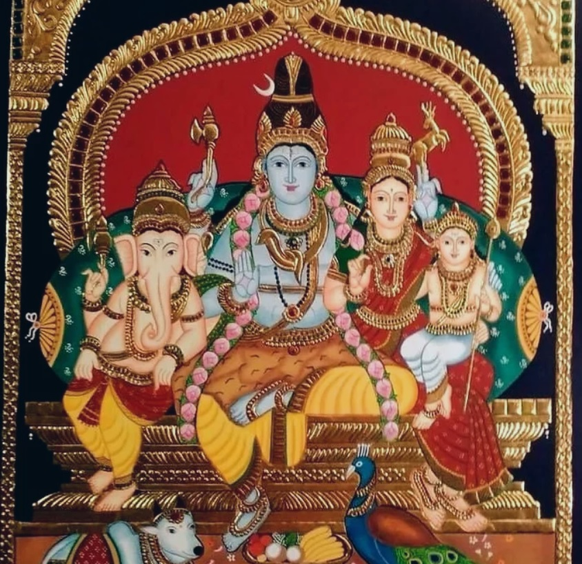

VM arts
Welcome to VM Arts

About the artist
Vijayalakshmi Muthuvenkataraman is a successful Tanjore artist who has over 2 decades of experience under her belt. She has been painting as a child and has been honing her skills over the years in her continious quest for perfection and challenges.
Contact: vlakshmicreations@gmail.com
The creator, Vijayalakshmi with her creation, Shiva Kutumbam

Her list of other works include:
- Maa Kaali
- Sri Ramanujacharya in the middle, flanked by Sri Pedda Jeeyar, Sri Chinna Jeeyar, Sri Deva Naada Jeeyar and Sri Ahobila Jeeyar
- Sri Satya Narayana Swamy
- Sri Maha Lakshmi
- Sri Venkatesa Perumal and Sri Padmavathi
- Sri Pillaiyar
- Baby Krishna
- Shirdi Sai Baba
- Mata Annapurneshwari
- Lord Krishna
Back to top